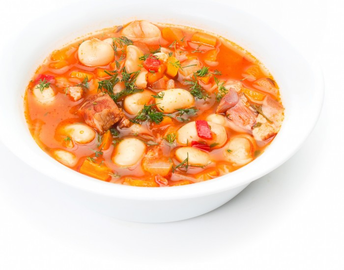
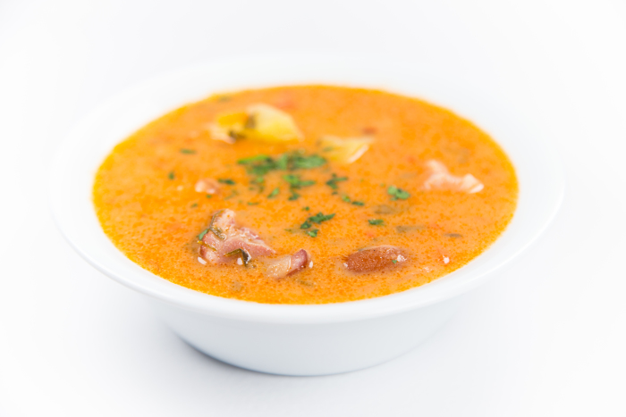
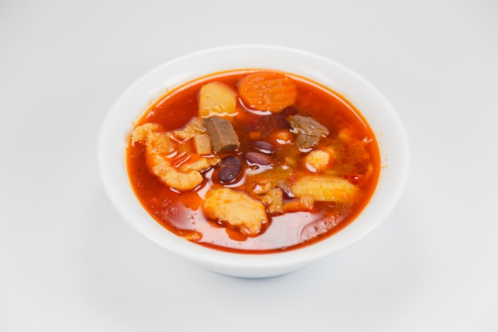
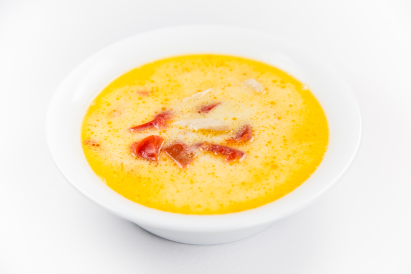
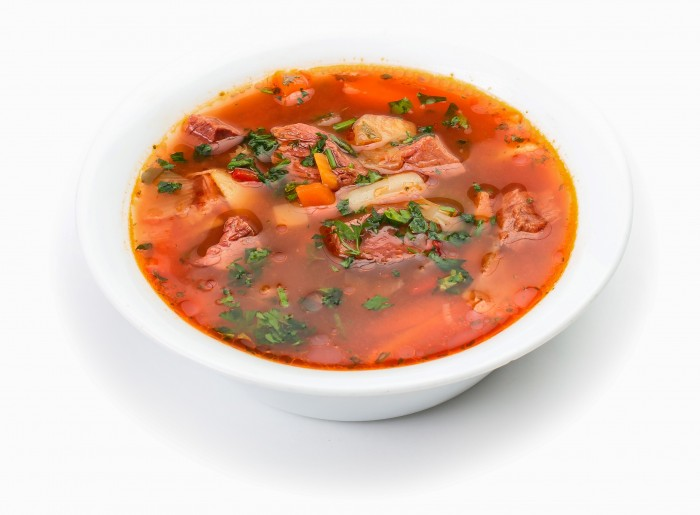

Ciorba de fasole
Ciorba de fasole boabe: costita afumata, fasole boabe, ceapa, ardei, telină, morcov.Inclus in pret: chifla si ardei iute.
350 g
7.00 lei

ciorba de salata
Ciorba de salata: salata verde, ceapa, faina, smantana, oua, costita afumata.Inclus in pret: chifla si ardei iute
350 g
7.00 lei

ciorba Taraneasca cu afumatura
Ciorba taraneasca cu afumatura: ciolan afumat, cartofi, morcovi, ardei, ceapa, telina, oua, smantana, tarhon, pasta de tomate, boia dulce.Inclus in pret: chifla si ardei iute.
350 g
8.00 lei

Gulas
Gulas: carne de vita, ceapa, telina, morcovi, ardei, cartofi, chimen, fasole boabe rosie, pasta de tomate, chilli, foi dafin, galuste din ou si faina.Inclus in pret: chifla si ardei iute.
350 g
8.00 lei

ciorba radauteana
Ciorba radauteana: piept pui, morcovi, ceapa, telina, usturoi, gogosar murat, galbenus ou, smantana, otet, ulei.Inclus in pret: chifla si ardei iute.
300 g
7.00 lei

Ciorba de vacuta
Ciorba de vacuta: pulpa manzat, oase vita, morcovi, ardei gras, ceapa, varza, fasole, mazare, cartofi.Inclus in pret: chifla si ardei iute.
350 g
8.00 lei